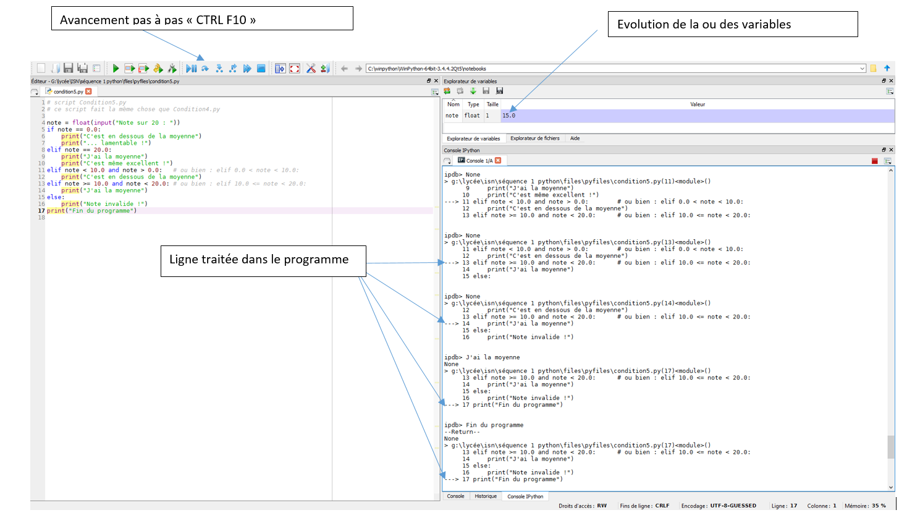

Test (débug)
Test (débug)
- Vous devez prévoir un temps important pour cette phase de "débug", elle prend toujours du temps. C'est sur cette partie que nous évaluerons votre capacité à programmer. Un programme ne fonctionne jamais du premier coup, et il faut supprimer les petites erreurs les unes après les autres de manière méthodique
et c'est à VOUS de le faire!
Pour débugger, le principe est de faire du "pas à pas" et de contrôler les valeurs des paramétres, variables... pour faire ceci nous utiliserons le logiciel "SPIDER 3"

Created with the Personal Edition of HelpNDoc: Easy to use tool to create HTML Help files and Help web sites